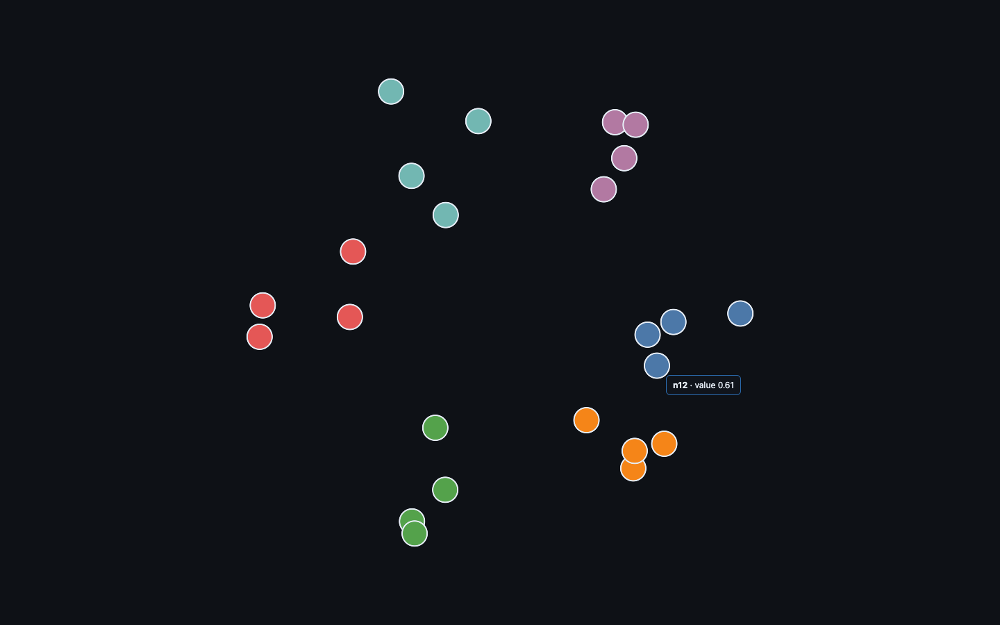
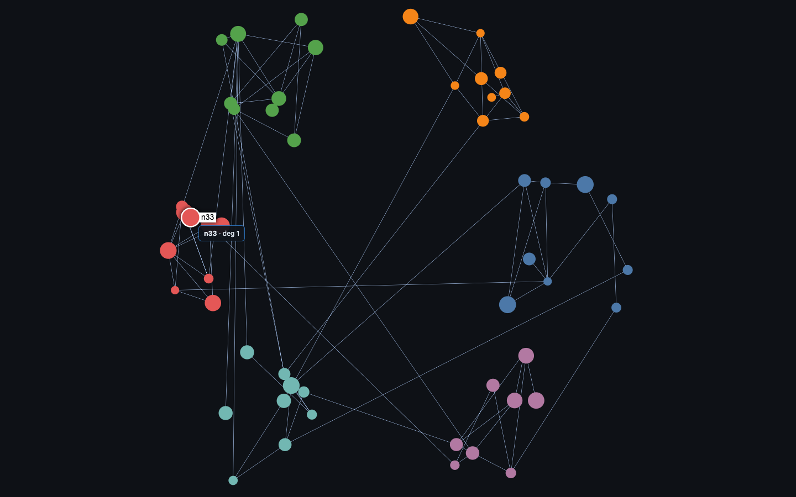
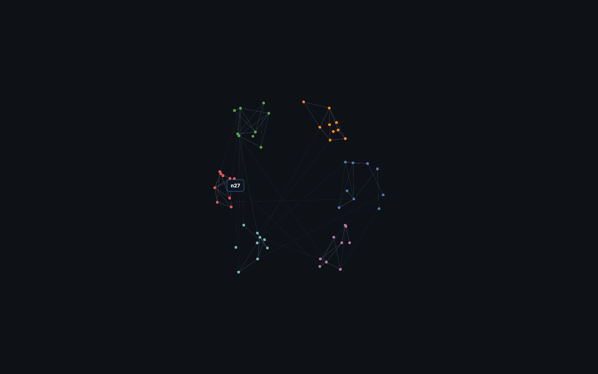
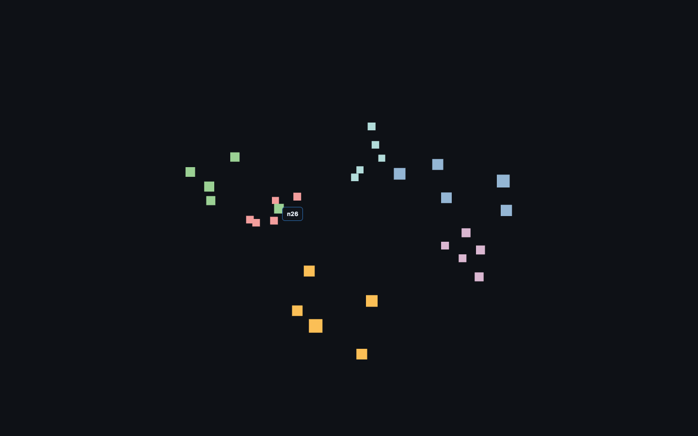
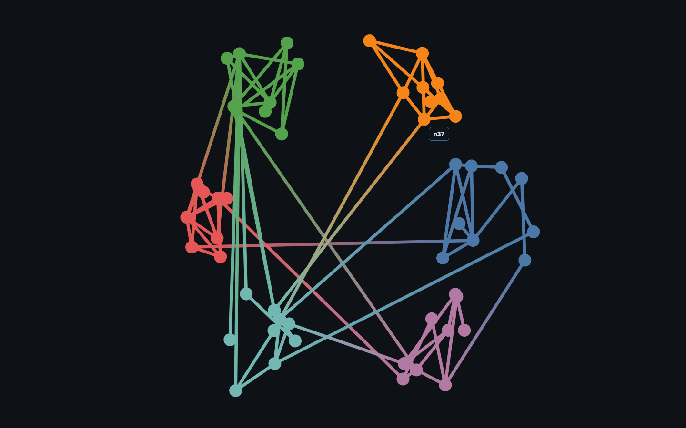

Identify the element under the cursor and show its detail. Built in for the graph libraries and deck.gl (pickable + getTooltip); three.js needs a raycaster.

Rendered on the real GPU and gate-verified — it draws, and the pixels change when the camera moves (not a frozen frame). Held 120 fps at 24 points.

Rendered on the real GPU and gate-verified — it draws, and the pixels change when the camera moves (not a frozen frame). Held 120 fps at 54 nodes / 86 edges.

Rendered on the real GPU and gate-verified — it draws, and the pixels change when the camera moves (not a frozen frame). Held 120 fps at 54 nodes / 86 edges.

Rendered on the real GPU and gate-verified — it draws, and the pixels change when the camera moves (not a frozen frame). Held 120 fps at 30 points.

Rendered on the real GPU and gate-verified — it draws, and the pixels change when the camera moves (not a frozen frame). Held 120 fps at 54 nodes / 86 edges.
| Library | Support | Notes |
|---|---|---|
| deck.gl | ✓ native · verified | Native picking — pickable:true + onHover / getTooltip. |
| Sigma.js | ✓ native · verified | Native enterNode / leaveNode / clickNode events. |
| cosmos.gl | ✓ native · verified | Native onPointMouseOver / onPointMouseOut hover callbacks. |
| three.js | ◑ workaround · verified | No built-in picking — a THREE.Raycaster on mousemove intersects the points. |
| Helios-Web | ✓ native · verified | Native onNodeHoverStart / onNodeHoverEnd callbacks; hover target located via Helios pickPoint. |